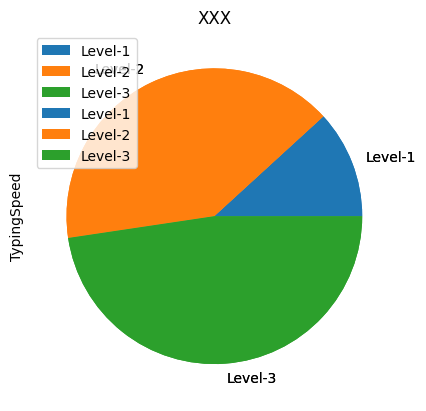
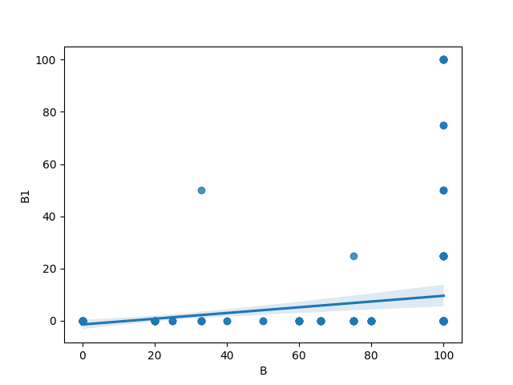

Pandas
Table of Contents

1. 簡介
1.1. Pandas
- 建構於 NumPy 之上分析模組，適合處理表格資料或異質資料。
- 於 2009 年底開源出來，提供高效能、簡易使用的資料格式(Data Frame，為 R 語言主要資料格式)，可以讓使用者可以快速操作及分析資料。
- Pandas 強化了資料處理的方便性也能與處理網頁資料與資料庫資料等，有點類似於Office 的 Excel，能更加方便的進行運算、分析等1。
- Pandas 主要特色有2：
- 在異質數據的讀取、轉換和處理上，都讓分析人員更容易處理，例如：從列欄試算表中找到想要的值。
- Pandas 提供兩種主要的資料結構，Series 與 DataFrame。Series 顧名思義就是用來處理時間序列相關的資料(如感測器資料等)，主要為建立索引的一維陣列。DataFrame 則是用來處理結構化(Table like)的資料，有列索引與欄標籤的二維資料集，例如關聯式資料庫、CSV 等等。
- 透過載入至 Pandas 的資料結構物件後，可以透過結構化物件所提供的方法，來快速地進行資料的前處理，如資料補值，空值去除或取代等。
- 更多的輸入來源及輸出整合性，例如：可以從資料庫讀取資料進入 Dataframe，也可將處理完的資料存回資料庫。
- 在異質數據的讀取、轉換和處理上，都讓分析人員更容易處理，例如：從列欄試算表中找到想要的值。
1.2. CSV
- Comma-Separated Values, 為純文字檔，以逗號分隔值，有時也稱為字元分隔值，因為分隔字元也可以不是逗號）。
- 純文字意味著該檔案是一個字元序列，不含必須像二進位制數字那樣被解讀的資料。
- CSV 檔案由任意數目的記錄組成，記錄間以某種換行符分隔；每條記錄由欄位組成，欄位間的分隔符是其它字元或字串，最常見的是逗號。
1.3. Pandas 資料結構
- Series: 用來處理時間序列相關的資料(如感測器資料等)，主要為建立索引的一維陣列。
- DataFrame: 是一個二維標籤資料結構，可以具有不同類型的行（column），類似 Excel的資料表，對於有使用過統計軟體的分析人員應該不陌生。簡單來說，Series 可以想像為一行多列（row）的資料，而 DataFrame 是多行多列的資料，藉由選擇索引（列標籤）和行（行標籤）的參數來操作資料，就像使用統計軟體透過樣本編號或變項名稱來操作資料。
Figure 1: Series v.s. Dataframe
2. Series
一維資料，類似numpy中的vector，但可以儲存任何類型的數據，包括整數、浮點數、字串等等。
2.1. 建立: 資料類型可為 array, dictionary
2.1.1. 由 array 建立 Series
1: import pandas as pd 2: 3: cars = ["SAAB", "Audi", "BMW", "BENZ", "Toyota", "Nissan", "Lexus"] 4: print("資料型別:", type(cars)) 5: carsToSeries = pd.Series(cars) 6: print("資料型別:", type(carsToSeries)) 7: print(carsToSeries.shape) 8: print(carsToSeries) 9: print("carsToSeries[1]: ", carsToSeries[1])
資料型別: <class 'list'> 資料型別: <class 'pandas.core.series.Series'> (7,) 0 SAAB 1 Audi 2 BMW 3 BENZ 4 Toyota 5 Nissan 6 Lexus dtype: object Audi
2.2. 資料篩選
2.2.1. 由dict來建立pandas.Series()
就是把dict的key當成index
1: import pandas as pd 2: 3: dict = { 4: "city": "Kaohsiung", 5: "speedCamera1": "13213", 6: "speedCamera2": "3242", 7: "speedCamera3": "134343", 8: "speedCamera4": "4312", 9: "speedCamera5": "533" 10: } 11: 12: dictToSeries = pd.Series(dict, index = dict.keys()) # 排序與原 dict 相同 13: print(dictToSeries[0]) 14: print("=====") 15: print(dictToSeries['speedCamera1']) 16: print("=====") 17: print(dictToSeries[[0, 2, 4]]) 18: print("=====") 19: print(dictToSeries[['city', 'speedCamera1', 'speedCamera3']]) 20: print("=====") 21: print(dictToSeries[:2]) 22: print("=====") 23: print(dictToSeries[4:]) 24: # 查詢 25: print("====會發現有一個NaN=====") 26: search=['speedCamera1', 'speedCamera6'] 27: print(pd.Series(dictToSeries, index=search))
Kaohsiung ===== 13213 ===== city Kaohsiung speedCamera2 3242 speedCamera4 4312 dtype: object ===== city Kaohsiung speedCamera1 13213 speedCamera3 134343 dtype: object ===== city Kaohsiung speedCamera1 13213 dtype: object ===== speedCamera4 4312 speedCamera5 533 dtype: object ====會發現有一個NaN===== speedCamera1 13213 speedCamera6 NaN dtype: object
3. DataFrame
3.1. DataFrame 建立
可利用 Dictionary 或是 Array 來建立，並使用 DataFrame 的方法來操作資料查看、資料篩選、資料切片、資料排序等運算。
3.2. 由 Dictionary 建立
1: import pandas as pd 2: 3: hobby = ["Movies", "Sports", "Coding", "Fishing", "Dancing", "cooking"] 4: count = [46, 8, 12, 12, 6, 58] 5: 6: dict = {"hobby": hobby, 7: "count": count 8: } 9: print(dict) 10: df = pd.DataFrame(dict) 11: print(df)
{'hobby': ['Movies', 'Sports', 'Coding', 'Fishing', 'Dancing', 'cooking'], 'count': [46, 8, 12, 12, 6, 58]}
hobby count
0 Movies 46
1 Sports 8
2 Coding 12
3 Fishing 12
4 Dancing 6
5 cooking 58
3.3. 由 Array 建立
1: import pandas as pd 2: 3: ary = [["Movies", 46],["Sports", 8], ["Coding", 12], ["Fishing",12], ["Dancing",6], ["cooking",8]] 4: print(ary) 5: ary2df = pd.DataFrame(ary, columns = ["hobby", "count"]) # 單純的二維矩陣沒有欄位名稱，要外加指定欄標籤名稱 6: print(ary2df) 7:
[['Movies', 46], ['Sports', 8], ['Coding', 12], ['Fishing', 12], ['Dancing', 6], ['cooking', 8]]
hobby count
0 Movies 46
1 Sports 8
2 Coding 12
3 Fishing 12
4 Dancing 6
5 cooking 8
3.4. 讀入外部資料檔來建立 Dataframe
3.4.1. 本機CSV(由本機端的PyCharm執行，不能在Google colab上跑)
- 可以從異質資料來源讀取檔案(如 CSV 檔)內容，並將資料放入 DataFrame 中，進行資料查看、資料篩選、資料切片等運算。
- 如果資料檔和程式放在同一目錄(資料夾)
- 如果資料檔放在本機在其他地方
- 絕對路徑
- 相對路徑
- 絕對路徑
- 下載範例檔:scores.csv
1: import pandas as pd 2: 3: # 讀取csv 4: df = pd.read_csv("/Users/student/Downloads/scores.csv") #這裡的路徑要自行更改 5: print("===全部資料===") 6: print(df) 7:
===全部資料===
id classparti typing homework midexam finalexam
0 201910901 100 72 92.11 48.0 16.0
1 201910902 96 56 93.42 60.0 40.0
2 201910903 96 76 102.63 45.0 28.0
3 201910904 93 64 86.84 44.0 25.0
4 201910905 93 56 42.11 0.0 20.0
.. ... ... ... ... ... ...
207 201911726 106 80 102.63 96.5 103.0
208 201911727 82 60 102.63 84.0 100.0
209 201911728 83 48 102.63 83.0 75.0
210 201911729 87 84 105.26 112.3 103.0
211 201911730 96 72 102.63 91.0 100.0
[212 rows x 6 columns]
3.4.2. Google Colab的檔案下載處理
import google.colab後，使用files.upload() 就能夠產生上傳檔案，此時cell會進入等待狀態，選取你本機的檔案即可上傳。
1: from google.colab import files 2: uploaded = files.upload()
執行後會出現以下畫面:

點選「瀏覽」選取檔案後即可將檔案上傳至Colab
3.4.2.1. 檔案上傳到哪裡?
可以執行!ls查看現在所在的目錄(資料夾)的內容
1: !ls
也可以執行!pwd查看現在在哪一個目錄(資料夾)
1: !pwd
3.4.2.2. 在Google Colab以Pandas查看csv檔
1: import pandas as pd 2: 3: # 讀取csv 4: df = pd.read_csv("/content/scores.csv") #這裡的路徑要自行更改 5: print("===全部資料===") 6: print(df)
3.4.3. 由Pandas直接讀取線上CSV檔
1: import pandas as pd 2: docURL = 'https://letranger.github.io/PythonCourse/scores.csv' #直接指定檔案的URL 3: df = pd.read_csv(docURL) 4: print('=====dataFrame的維度') 5: print(df.shape) 6: print('=====dataFrame的數值分佈概況') 7: print(df.describe()) 8: print('=====dataFrame的前5筆記錄') 9: print(df.head(5))
=====dataFrame的維度
(212, 6)
=====dataFrame的數值分佈概況
id classparti typing homework midexam finalexam
count 2.120000e+02 212.000000 212.00000 212.000000 211.000000 212.000000
mean 2.019113e+08 92.386792 82.09434 89.394764 62.863033 49.458491
std 2.933047e+02 13.798874 23.06041 19.471763 34.104173 34.831187
min 2.019109e+08 14.000000 0.00000 10.750000 0.000000 0.000000
25% 2.019110e+08 87.000000 68.00000 83.880000 35.000000 20.000000
50% 2.019111e+08 94.000000 80.00000 97.370000 67.000000 45.000000
75% 2.019116e+08 101.000000 96.00000 102.630000 95.000000 76.000000
max 2.019117e+08 120.000000 120.00000 107.890000 113.500000 115.000000
=====dataFrame的前5筆記錄
id classparti typing homework midexam finalexam
0 201910901 100 72 92.11 48.0 16.0
1 201910902 96 56 93.42 60.0 40.0
2 201910903 96 76 102.63 45.0 28.0
3 201910904 93 64 86.84 44.0 25.0
4 201910905 93 56 42.11 0.0 20.0
4. DataFrame 的資料瀏覽
4.1. 基本函數
- shape
- describe()
- head()
- tail()
- columns
- index
- info()
1: import pandas as pd 2: docURL = 'https://letranger.github.io/PythonCourse/scores.csv' 3: df = pd.read_csv(docURL) 4: 5: print("====df.shape====") 6: print(df.shape) # 回傳列數與欄數 7: print("====df.describe()====") 8: print(df.describe()) # 回傳描述性統計 9: print("====df.head(3)====") 10: print(df.head(3)) # 回傳前三筆觀測值 11: print("====df.tail(3)====") 12: print(df.tail(3)) # 回傳後三筆觀測值 13: print("====df.columns====") 14: print(df.columns) # 回傳欄位名稱 15: print("====df.columns====") 16: print(df.index) # 回傳 index 17: print("====df.info====") 18: print(df.info) # 回傳資料內容
====df.shape====
(212, 6)
====df.describe()====
id classparti typing homework midexam finalexam
count 2.120000e+02 212.000000 212.00000 212.000000 211.000000 212.000000
mean 2.019113e+08 92.386792 82.09434 89.394764 62.863033 49.458491
std 2.933047e+02 13.798874 23.06041 19.471763 34.104173 34.831187
min 2.019109e+08 14.000000 0.00000 10.750000 0.000000 0.000000
25% 2.019110e+08 87.000000 68.00000 83.880000 35.000000 20.000000
50% 2.019111e+08 94.000000 80.00000 97.370000 67.000000 45.000000
75% 2.019116e+08 101.000000 96.00000 102.630000 95.000000 76.000000
max 2.019117e+08 120.000000 120.00000 107.890000 113.500000 115.000000
====df.head(3)====
id classparti typing homework midexam finalexam
0 201910901 100 72 92.11 48.0 16.0
1 201910902 96 56 93.42 60.0 40.0
2 201910903 96 76 102.63 45.0 28.0
====df.tail(3)====
id classparti typing homework midexam finalexam
209 201911728 83 48 102.63 83.0 75.0
210 201911729 87 84 105.26 112.3 103.0
211 201911730 96 72 102.63 91.0 100.0
====df.columns====
Index(['id', 'classparti', 'typing', 'homework', 'midexam', 'finalexam'], dtype='object')
====df.columns====
RangeIndex(start=0, stop=212, step=1)
====df.info====
<bound method DataFrame.info of id classparti typing homework midexam finalexam
0 201910901 100 72 92.11 48.0 16.0
1 201910902 96 56 93.42 60.0 40.0
2 201910903 96 76 102.63 45.0 28.0
3 201910904 93 64 86.84 44.0 25.0
4 201910905 93 56 42.11 0.0 20.0
.. ... ... ... ... ... ...
207 201911726 106 80 102.63 96.5 103.0
208 201911727 82 60 102.63 84.0 100.0
209 201911728 83 48 102.63 83.0 75.0
210 201911729 87 84 105.26 112.3 103.0
211 201911730 96 72 102.63 91.0 100.0
[212 rows x 6 columns]>
4.2. DataFrame 資料排序
- sort_values(): 依欄位的值來排序(較常用)
- sort_index(): 依欄位名稱或index值來排。The axis along which to sort. The value 0 identifies the rows, and 1 identifies the columns.
- sort 後的結果為 複本 ，不改變原本的資料
1: import pandas as pd 2: docURL = 'https://letranger.github.io/PythonCourse/scores.csv' 3: df = pd.read_csv(docURL) 4: 5: print("====Original====") 6: print(df.head()) 7: print("===.sort_values()====") 8: print(df.sort_values(by = 'finalexam')[:10]) 9: print(df.sort_values(by = ['typing', 'homework'], ascending=False)[:10]) 10: print("===.sort_index()====") 11: print(df.sort_index(axis = 1, ascending = True)) 12: print("===.sort_index()====") 13: print(df.sort_index(axis = 0, ascending = False))
====Original====
id classparti typing homework midexam finalexam
0 201910901 100 72 92.11 48.0 16.0
1 201910902 96 56 93.42 60.0 40.0
2 201910903 96 76 102.63 45.0 28.0
3 201910904 93 64 86.84 44.0 25.0
4 201910905 93 56 42.11 0.0 20.0
===.sort_values()====
id classparti typing homework midexam finalexam
81 201911108 95 100 66.89 0.0 0.0
36 201910937 89 84 97.37 4.0 0.0
139 201911330 95 72 51.32 30.0 0.0
45 201911009 71 64 99.78 36.2 0.0
49 201911013 88 76 70.61 15.0 0.0
55 201911019 74 64 81.58 5.0 0.0
25 201910926 67 60 88.16 0.0 0.0
23 201910924 75 48 10.75 0.0 0.0
124 201911315 71 120 15.35 0.0 0.0
119 201911310 82 56 46.71 17.0 0.0
id classparti typing homework midexam finalexam
196 201911715 106 120 107.89 102.40 105.00
198 201911717 80 120 107.89 106.00 100.00
103 201911130 120 120 106.84 70.00 80.00
118 201911309 87 120 105.26 98.96 103.75
73 201911037 93 120 102.63 49.00 56.00
158 201911613 88 120 102.63 107.50 72.00
188 201911707 80 120 102.63 100.00 56.00
203 201911722 105 120 102.63 101.50 105.00
28 201910929 88 120 100.00 40.00 20.00
200 201911720 110 120 100.00 100.00 80.00
===.sort_index()====
classparti finalexam homework id midexam typing
0 100 16.0 92.11 201910901 48.0 72
1 96 40.0 93.42 201910902 60.0 56
2 96 28.0 102.63 201910903 45.0 76
3 93 25.0 86.84 201910904 44.0 64
4 93 20.0 42.11 201910905 0.0 56
.. ... ... ... ... ... ...
207 106 103.0 102.63 201911726 96.5 80
208 82 100.0 102.63 201911727 84.0 60
209 83 75.0 102.63 201911728 83.0 48
210 87 103.0 105.26 201911729 112.3 84
211 96 100.0 102.63 201911730 91.0 72
[212 rows x 6 columns]
===.sort_index()====
id classparti typing homework midexam finalexam
211 201911730 96 72 102.63 91.0 100.0
210 201911729 87 84 105.26 112.3 103.0
209 201911728 83 48 102.63 83.0 75.0
208 201911727 82 60 102.63 84.0 100.0
207 201911726 106 80 102.63 96.5 103.0
.. ... ... ... ... ... ...
4 201910905 93 56 42.11 0.0 20.0
3 201910904 93 64 86.84 44.0 25.0
2 201910903 96 76 102.63 45.0 28.0
1 201910902 96 56 93.42 60.0 40.0
0 201910901 100 72 92.11 48.0 16.0
[212 rows x 6 columns]
4.3. DataFrame 處理遺漏值
- dropna()
- fillna()
- isnull()
- notnull()
- 下載scores-null.csv
1: import pandas as pd 2: docURL = 'https://letranger.github.io/PythonCourse/scores-null.csv' 3: df = pd.read_csv(docURL) 4: 5: #df = pd.read_csv('scores-null.csv') 6: print("====原始資料====") 7: print(df) 8: # 查詢遺失值狀況 9: print('====遺失值====') 10: print(df.isnull()) 11: print(df.isnull().sum()) 12: # 刪除有遺失值的記錄 13: print("====刪除有遺失值的記錄====") 14: dropValue = df.dropna() 15: print(dropValue) 16: fill0 = df.fillna(0) 17: print("====遺失值填零====") 18: print(fill0) 19: fillv = df.fillna({"classparti":999, "typing":0, "finalExam":"NULL"}) 20: print("====遺失值填特定值====") 21: print(fillv)
====原始資料====
id classparti typing homework finalExam
0 201910901 100.0 72.0 92.11 48.0
1 201910902 96.0 56.0 93.42 60.0
2 201910903 96.0 76.0 102.63 NaN
3 201910904 NaN 64.0 86.84 44.0
4 201910905 93.0 56.0 42.11 0.0
5 201910906 101.0 108.0 100.00 NaN
6 201910907 101.0 NaN 92.11 55.0
7 201910908 94.0 68.0 105.26 61.0
8 201910909 NaN 64.0 44.74 20.0
9 201910910 93.0 120.0 97.37 16.0
====遺失值====
id classparti typing homework finalExam
0 False False False False False
1 False False False False False
2 False False False False True
3 False True False False False
4 False False False False False
5 False False False False True
6 False False True False False
7 False False False False False
8 False True False False False
9 False False False False False
id 0
classparti 2
typing 1
homework 0
finalExam 2
dtype: int64
====刪除有遺失值的記錄====
id classparti typing homework finalExam
0 201910901 100.0 72.0 92.11 48.0
1 201910902 96.0 56.0 93.42 60.0
4 201910905 93.0 56.0 42.11 0.0
7 201910908 94.0 68.0 105.26 61.0
9 201910910 93.0 120.0 97.37 16.0
====遺失值填零====
id classparti typing homework finalExam
0 201910901 100.0 72.0 92.11 48.0
1 201910902 96.0 56.0 93.42 60.0
2 201910903 96.0 76.0 102.63 0.0
3 201910904 0.0 64.0 86.84 44.0
4 201910905 93.0 56.0 42.11 0.0
5 201910906 101.0 108.0 100.00 0.0
6 201910907 101.0 0.0 92.11 55.0
7 201910908 94.0 68.0 105.26 61.0
8 201910909 0.0 64.0 44.74 20.0
9 201910910 93.0 120.0 97.37 16.0
====遺失值填特定值====
id classparti typing homework finalExam
0 201910901 100.0 72.0 92.11 48.0
1 201910902 96.0 56.0 93.42 60.0
2 201910903 96.0 76.0 102.63 NULL
3 201910904 999.0 64.0 86.84 44.0
4 201910905 93.0 56.0 42.11 0.0
5 201910906 101.0 108.0 100.00 NULL
6 201910907 101.0 0.0 92.11 55.0
7 201910908 94.0 68.0 105.26 61.0
8 201910909 999.0 64.0 44.74 20.0
9 201910910 93.0 120.0 97.37 16.0
5. Dataframe 的選取與過濾
5.1. 資料選取: Select column(s) 5
df[['col1', 'col2']]df.col1
1: import pandas as pd 2: docURL = 'https://letranger.github.io/PythonCourse/scores.csv' 3: df = pd.read_csv(docURL) 4: 5: print(df.head(3)) 6: # 以 df[['column']] 來選欄位 7: print(df[['id', 'typing']]) 8: # df[['id', 'typing']]的結果仍是dataframe，後面可以再加上dataframe的function 9: print(df[['id', 'typing']].head(3)) 10: # 以 df.column 來選欄位 11: print(df.id, df.homework)
id classparti typing homework midexam finalexam
0 201910901 100 72 92.11 48.0 16.0
1 201910902 96 56 93.42 60.0 40.0
2 201910903 96 76 102.63 45.0 28.0
id typing
0 201910901 72
1 201910902 56
2 201910903 76
3 201910904 64
4 201910905 56
.. ... ...
207 201911726 80
208 201911727 60
209 201911728 48
210 201911729 84
211 201911730 72
[212 rows x 2 columns]
id typing
0 201910901 72
1 201910902 56
2 201910903 76
0 201910901
1 201910902
2 201910903
3 201910904
4 201910905
...
207 201911726
208 201911727
209 201911728
210 201911729
211 201911730
Name: id, Length: 212, dtype: int64 0 92.11
1 93.42
2 102.63
3 86.84
4 42.11
...
207 102.63
208 102.63
209 102.63
210 105.26
211 102.63
Name: homework, Length: 212, dtype: float64
5.2. 資料選取: Select using index (row)
df[1:20]
1: import pandas as pd 2: docURL = 'https://letranger.github.io/PythonCourse/scores.csv' 3: df = pd.read_csv(docURL) 4: 5: # 以row index來選取資料 6: print(df[1:3]) 7: # 以條件來選取資料 8: print(df[df.homework<30]) 9: # 合併row and column兩項條件 10: print(df.id[df.homework<30]) 11: print(df[['id', 'homework']][1:3])
id classparti typing homework midexam finalexam
1 201910902 96 56 93.42 60.0 40.0
2 201910903 96 76 102.63 45.0 28.0
id classparti typing homework midexam finalexam
10 201910911 62 44 20.39 4.0 0.0
18 201910919 14 56 25.92 0.0 0.0
23 201910924 75 48 10.75 0.0 0.0
124 201911315 71 120 15.35 0.0 0.0
140 201911331 93 120 25.88 0.0 16.0
10 201910911
18 201910919
23 201910924
124 201911315
140 201911331
Name: id, dtype: int64
id homework
1 201910902 93.42
2 201910903 102.63
5.3. 條件式選取資料
5.3.1. 語法
df[(condition)]df[(condition 1) & (condition 2) ]
5.3.2. 範例
1: import pandas as pd 2: 3: docURL = 'https://letranger.github.io/PythonCourse/scores.csv' 4: df = pd.read_csv(docURL) 5: 6: print(df[(df.midexam >= 100) & (df.finalexam >= 100)])
id classparti typing homework midexam finalexam
11 201910912 87 92 92.11 110.8 103.75
70 201911034 104 92 102.63 100.8 101.00
88 201911115 120 88 105.26 113.5 111.00
98 201911125 119 80 107.89 113.2 115.00
102 201911129 106 52 102.63 103.6 100.00
127 201911318 108 80 102.63 104.8 100.00
138 201911329 105 48 107.89 100.0 100.00
143 201911334 100 120 81.58 104.8 113.00
153 201911608 88 0 102.63 100.0 100.00
169 201911624 82 100 102.63 101.5 105.00
182 201911701 103 108 92.63 100.0 100.00
189 201911708 106 108 102.63 107.2 101.00
190 201911709 108 88 107.89 104.8 105.00
191 201911710 102 100 102.63 100.0 105.00
193 201911712 105 96 101.58 107.5 100.00
195 201911714 102 44 107.89 110.0 110.00
196 201911715 106 120 107.89 102.4 105.00
198 201911717 80 120 107.89 106.0 100.00
201 201911721 109 76 100.00 100.0 100.00
203 201911722 105 120 102.63 101.5 105.00
210 201911729 87 84 105.26 112.3 103.00
5.4. 進階條件過濾[loc/iloc]
5.4.1. loc, iloc, between 6
- loc: 基於行標籤和列標籤（x_label、y_label）進行索引，以 column 名做為 index
- iloc: 基於行索引和列索引（index，columns） 都是從 0 開始，以數字做為 index
- between: 檢查區間值,
Series.between(self, left, right, inclusive=True)
5.4.1.1. 範例 1
1: import pandas as pd 2: 3: docURL = 'https://letranger.github.io/PythonCourse/scores.csv' 4: df = pd.read_csv(docURL) 5: 6: print(df.head(3)) 7: print("========") 8: print(df.loc[df.homework<25, ['id', 'homework']]) 9: print("========") 10: print(df.loc[2,'homework'])
id classparti typing homework midexam finalexam
0 201910901 100 72 92.11 48.0 16.0
1 201910902 96 56 93.42 60.0 40.0
2 201910903 96 76 102.63 45.0 28.0
========
id homework
10 201910911 20.39
23 201910924 10.75
124 201911315 15.35
========
102.63
5.4.1.2. 範例 2
1: # 載入函式庫 2: import pandas as pd 3: 4: # 讀取csv 5: docURL = 'https://letranger.github.io/PythonCourse/scores.csv' 6: df = pd.read_csv(docURL) 7: 8: # 輸出前3筆 9: print(df.iloc[:3]) 10: # 輸出前3筆的第2,3欄 11: print(df.iloc[:2, 1:3]) 12: 13: print(df['midexam'].between(50, 60)) 14: midFilter = df['midexam'].between(50, 55) 15: print(df[midFilter]) #也可以直接寫成 df[ df['midexam'].between(50, 55)], 和NumPy的語法類似
Pandas version: 0.25.1
id classparti typing homework midexam finalexam
0 201910901 100 72 92.11 48.0 16.0
1 201910902 96 56 93.42 60.0 40.0
2 201910903 96 76 102.63 45.0 28.0
classparti typing
0 100 72
1 96 56
102.63
0 False
1 True
2 False
3 False
4 False
...
207 False
208 False
209 False
210 False
211 False
Name: midexam, Length: 212, dtype: bool
id classparti typing homework midexam finalexam
6 201910907 101 120 92.11 55.0 20.0
65 201911029 93 60 82.00 50.0 16.0
72 201911036 88 80 102.63 53.0 76.0
92 201911119 82 104 89.47 50.0 20.0
94 201911121 95 100 88.51 52.0 72.0
109 201911136 91 100 81.58 51.0 4.0
171 201911626 98 72 97.37 50.0 75.0
6. 進階分析
6.1. 由其他 column 產生新的 column(重要、實用)
- 全部指定
- 條件指定
1: import pandas as pd 2: 3: # 讀取csv 4: docURL = 'https://letranger.github.io/PythonCourse/scores.csv' 5: df = pd.read_csv(docURL) 6: 7: # 計算總分' 8: df['Final'] = df.classparti*.1 + df.typing*.1 + df.homework*.2 + df.midexam*.3 + df.finalexam*.3 9: print(df.head())
id classparti typing homework midexam finalexam Final
0 201910901 100 72 92.11 48.0 16.0 54.822
1 201910902 96 56 93.42 60.0 40.0 63.884
2 201910903 96 76 102.63 45.0 28.0 59.626
3 201910904 93 64 86.84 44.0 25.0 53.768
4 201910905 93 56 42.11 0.0 20.0 29.322
6.2. 資料分組: groupby
1: # PASS/FAIL 2: df.loc[df.Final < 60, 'PASS'] = False 3: df.loc[df.Final >= 60, 'PASS'] = True 4: 5: # 新增一個打字速度的欄位 6: df.loc[df.typing < 30, 'TypingSpeed' ] = 'LOW' 7: df.loc[df.typing.between(30, 60), 'TypingSpeed' ] = 'MID' 8: df.loc[df.typing > 60, 'TypingSpeed' ] = 'HIGH' 9: 10: print(df.head(3))
id classparti typing homework midexam finalexam Final PASS TypingSpeed
0 201910901 100 72 92.11 48.0 16.0 54.822 False HIGH
1 201910902 96 56 93.42 60.0 40.0 63.884 True MID
2 201910903 96 76 102.63 45.0 28.0 59.626 False HIGH
6.3. 交叉分析
1: # 依打字速度分組，看不同組別的學期總成績分佈 2: print('---依打字速度分組---') 3: print(df.groupby('TypingSpeed')['Final'].mean()) 4: print(df.groupby('PASS')[['typing' ,'homework']].mean()) 5: 6: # 罝換row/column 7: print('---置換row/column(轉90度)---') 8: print(df.groupby('PASS')[['typing' ,'homework']].mean().T) 9:
---依打字速度分組---
TypingSpeed
HIGH 69.977451
LOW 68.517333
MID 64.086303
Name: Final, dtype: float64
typing homework
PASS
False 77.567568 76.409054
True 84.525547 96.350730
---置換row/column(轉90度)---
PASS False True
typing 77.567568 84.525547
homework 76.409054 96.350730
6.4. 資料檔下載: scores.csv
7. 資料視覺化
7.1. Bar chart
1: # 載入函式庫 2: import pandas as pd 3: import matplotlib.pyplot as plt 4: 5: # 讀取csv 6: docURL = 'https://letranger.github.io/PythonCourse/scores.csv' 7: df = pd.read_csv(docURL) 8: 9: # 計算總分' 10: df['Final'] = df.classparti*.1 + df.typing*.1 + df.homework*.2 + df.midexam*.3 + df.finalexam*.3 11: 12: # create new column according to typing speed 13: df.loc[df.typing < 30, 'TypingSpeed' ] = 'Level-1' 14: df.loc[df.typing.between(30, 60), 'TypingSpeed' ] = 'Level-2' 15: df.loc[df.typing > 60, 'TypingSpeed' ] = 'Level-3' 16: 17: x = df.groupby('TypingSpeed')[['homework','classparti']].mean() 18: print(x) 19: # 關於圖表的屬性設定方式 20: fig = df.groupby('TypingSpeed')[['homework','classparti']].mean().plot(kind='bar', title="XXX", rot=0, legend=True) 21: fig.set_xlabel("Typing Speed") 22: fig.set_ylabel("score") 23: #savefig = fig.get_figure() # 如果不存圖檔就不用設定這行 24: # 關於圖表的屬性設定方式 25: fig1 = df.groupby('TypingSpeed')[['homework','classparti']].mean().T.plot(kind='bar', title="XXX", rot=0, legend=True) 26: fig1.set_xlabel("Subject") 27: fig1.set_ylabel("score") 28: #savefig1 = fig1.get_figure()# 如果不存圖檔就不用設定這行 29: 30: # 如果不存圖檔就不用執行以下程式 31: savefig.savefig('images/pandasPlot1.png', bbox_inches='tight') 32: savefig1.savefig('images/pandasPlot10.png', bbox_inches='tight')
homework classparti
TypingSpeed
Level-1 96.053333 87.666667
Level-2 85.273939 88.696970
Level-3 90.053920 93.159091

Figure 2: Pandas plot bar chart

Figure 3: Pandas plot bar chart
7.2. Regression line chart
1: # 載入函式庫 2: import pandas as pd 3: import seaborn as sns 4: 5: # 讀取csv 6: docURL = 'https://letranger.github.io/PythonCourse/scores.csv' 7: df = pd.read_csv(docURL) 8: 9: sns.regplot(x="midexam", y='finalexam', data=df); 10: 11: #fig = sns.regplot(x="midexam", y='finalexam', data=df); 12: #savefig = fig.get_figure() 13: #savefig.savefig('images/PandasPlot4.png') 14:
Figure 4: Pandas plot scatter chart
7.3. Pie chart
7.3.1. DEMO
1: # 載入函式庫 2: import pandas as pd 3: 4: # 讀取csv 5: docURL = 'https://letranger.github.io/PythonCourse/scores.csv' 6: df = pd.read_csv(docURL) 7: 8: # 計算總分' 9: df['Final'] = df.classparti*.1 + df.typing*.1 + df.homework*.2 + df.midexam*.3 + df.finalexam*.3 10: 11: # create new column according to typing speed 12: df.loc[df.typing < 60, 'TypingSpeed' ] = 'Level-1' 13: df.loc[df.typing.between(60, 80), 'TypingSpeed' ] = 'Level-2' 14: df.loc[df.typing > 80, 'TypingSpeed' ] = 'Level-3' 15: print(df.groupby('TypingSpeed').count()) 16: df.groupby('TypingSpeed')['TypingSpeed'].count().plot(kind='pie', title="XXX", rot=0, legend=True) 17: # 如果不存圖檔就不用執行以下程式 18: #fig = df.groupby('TypingSpeed')['TypingSpeed'].count().plot(kind='pie', title="XXX", rot=0, legend=True) 19: #savefig = fig.get_figure() 20: #savefig.savefig('images/pandasPlot2.png', bbox_inches='tight')
id classparti typing homework midexam finalexam Final
TypingSpeed
Level-1 25 25 25 25 25 25 25
Level-2 86 86 86 86 86 86 86
Level-3 101 101 101 101 100 101 100

Figure 5: Pandas plot pie chart
7.3.2. 如何避免圖例擋住圖表
7.4. Scatter chart
1: # 載入函式庫 2: import pandas as pd 3: 4: # 讀取csv 5: docURL = 'https://letranger.github.io/PythonCourse/scores.csv' 6: df = pd.read_csv(docURL) 7: 8: df[['midexam','finalexam']].plot(kind='scatter', x=1, y=0) 9: fig = df[['midexam','finalexam']].plot(kind='scatter', x=1, y=0) 10: 11: # 如果不存圖檔就不用執行以下程式 12: #savefig = fig.get_figure() 13: #savefig.savefig('images/PandasPlot3.png')

Figure 6: Pandas plot scatter chart
7.5. Haxbin chart
1: # 載入函式庫 2: import pandas as pd 3: 4: # 讀取csv 5: docURL = 'https://letranger.github.io/PythonCourse/scores.csv' 6: df = pd.read_csv(docURL) 7: 8: df[['midexam','finalexam']].plot(kind='hexbin', x=1, y=0, gridsize=25) 9: 10: fig = df[['midexam','finalexam']].plot(kind='hexbin', x=1, y=0, gridsize=25) 11: #savefig = fig.get_figure() 12: #savefig.savefig('images/PandasPlot6.png')

Figure 7: Pandas plot hexbin chart
8. [課堂練習] TNFSH
8.1. 403期中考得分統計
- 原始數據

Figure 8: CSV 內容
- cs109score.csv為 T 市某校的資訊科線上期中考系統所匯出的成績檔，該次考試共計 10 題，其中
- 前 5 題(A,B,C,D,E)為基本題，每題 100 分，
- 後 4 題為加分題(Bonus1~Bonus4)，每題 25 分
- 本份考卷總分：600；
- 總得分除以 5 即為期中考得分
- 此次期中考總分 120分。
- 前 5 題(A,B,C,D,E)為基本題，每題 100 分，
8.1.1. 任務 1 (10%):
- 將有缺失值的部份以 0 分取代。
- 直接輸出前10筆資料
8.1.2. 任務 2 (20%):
- 求出每個人的原始總分(即所有分數)，新增的欄位名稱為TOTAL
- 新增欄位SCORE, 其值為每個人的實際得分(原始總分TOTAL除以 5)
- 直接輸出前10筆資料
8.1.3. 任務 3 (20%):
求所有受試者第 B 及 B1 兩題的 scatter plot 以及 regression line。如下圖:

Figure 9: 任務3
8.1.4. 任務 4 (30%):
- 新增ABILITY欄位，依以下條件填入類別
- SCORE <= 50, ABILITY: ’LEVEL-1’
- 50 < SCORE < 80, ABILITY: ’LEVEL-2’
- SCORE >= 80, ABILITY: ’LEVEL-3’
- SCORE <= 50, ABILITY: ’LEVEL-1’
8.1.5. 任務 5 (20%):
交叉分析，依ABILITY分組，查看此三組學生的前三題(A, B, C)得分情況，並繪製圖表

Figure 10: 任務5
8.2. 進階練習
一dataframe如下
import numpy as np import pandas as pd scores = {'Math': [900, 50, 70, 80], 'English': [60, 30, 90, 50], 'History': [33, 75, np.NaN, np.NaN]} df = pd.DataFrame(scores, index=['Simon', 'Allen', 'Jimmy', 'Vanessa'])
試解決以下問題：
- 列出Math分數>100資料
- 將Siman之Math改為90分
- 計算History遺漏值筆數
- 以History平均值取代History中遺漏值
- 新增“平均”欄位，計算四人各科平均
- 新增“名次”欄位，以四人平均分數為排序依據
- 列出平均不及格者
- 列出數學最高分者姓名